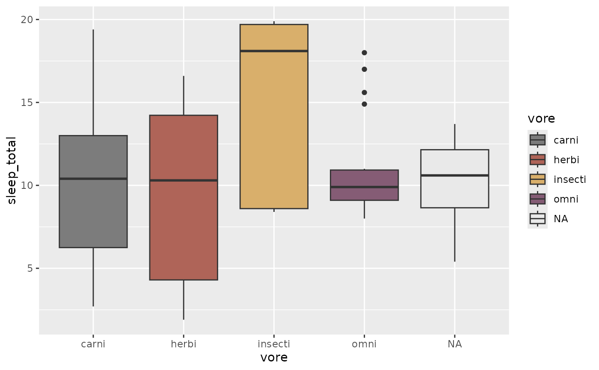

CARTO color scales
scale_color_carto_c(
...,
type = "quantitative",
palette = 1,
direction = 1,
na.value = "#e9e9e9",
guide = "colourbar"
)
scale_color_carto_d(
...,
type = "qualitative",
palette = 1,
direction = 1,
na.value = "#e9e9e9"
)
scale_colour_carto_c(
...,
type = "quantitative",
palette = 1,
direction = 1,
na.value = "#e9e9e9",
guide = "colourbar"
)
scale_colour_carto_d(
...,
type = "qualitative",
palette = 1,
direction = 1,
na.value = "#e9e9e9"
)
scale_fill_carto_c(
...,
type = "quantitative",
palette = 1,
direction = 1,
na.value = "#e9e9e9",
guide = "colourbar"
)
scale_fill_carto_d(
...,
type = "qualitative",
palette = 1,
direction = 1,
na.value = "#e9e9e9"
)Other arguments passed on to discrete_scale() or
continuous_scale() to control name, limits, breaks, labels and so forth
One of \"aggregation\", \"diverging\", \"qualitative\", or \"quantitative\"
If a string, will use that named palette. If a number, will
index into the list of palettes of appropriate type
Sets the order of colors in the scale. If 1, the default,
colors are as output by carto_pal(). If -1, the
order of colors is reversed
Missing values will be replaced with this value.
A function used to create a guide or its name. See
guides() for more information.
library(ggplot2)
ggplot(msleep, aes(vore, sleep_total, fill = vore)) +
geom_boxplot() +
scale_fill_carto_d(palette = 6, direction = -1)

if (FALSE) {
library(sf)
library(spData)
library(ggplot2)
ggplot(world, aes(fill = lifeExp)) +
geom_sf(data = world) +
coord_sf(crs = "+proj=robin") +
scale_fill_carto_c(name = "Life expectancy: ",
type = "diverging", palette = "Earth", direction = -1) +
theme_void()
ggplot(world, aes(fill = region_un)) +
geom_sf(data = world) +
coord_sf(crs = "+proj=robin") +
scale_fill_carto_d(name = "Region: ", palette = "Safe") +
theme_void()
}